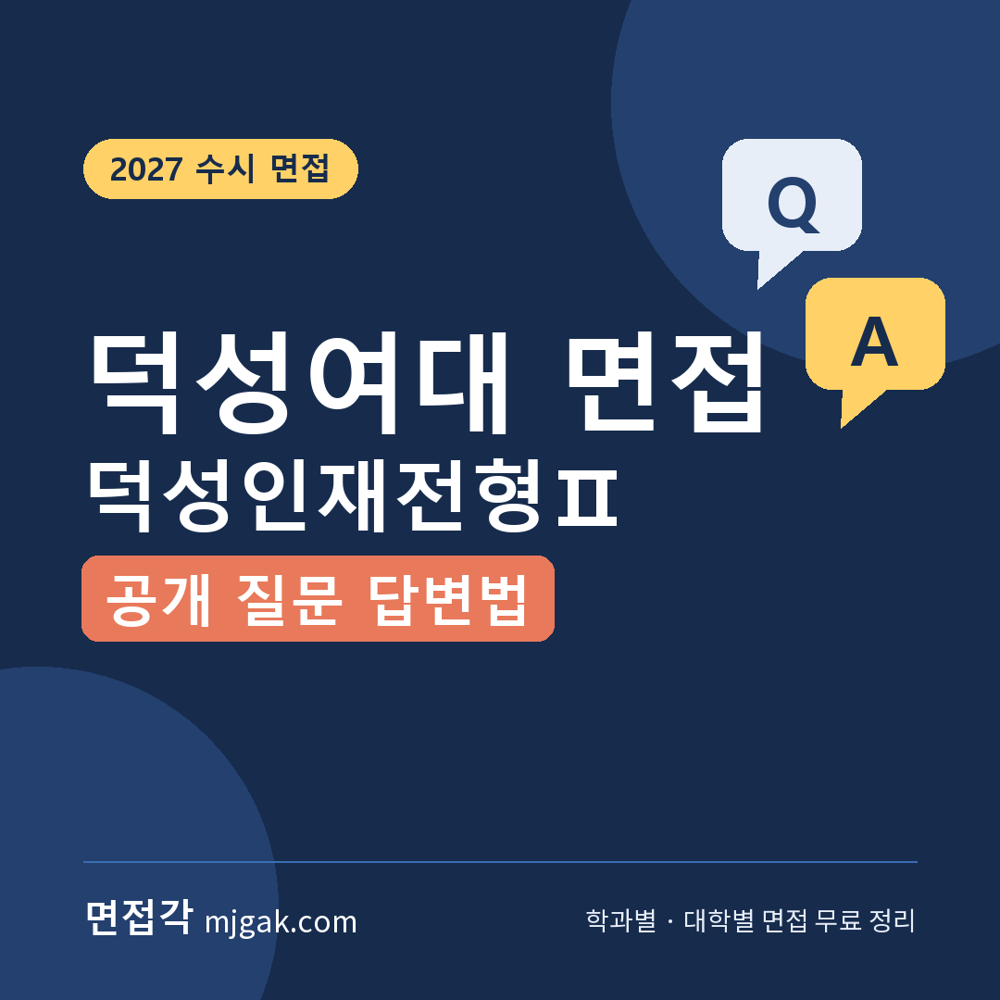
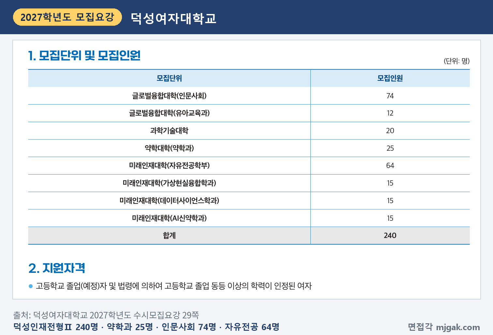
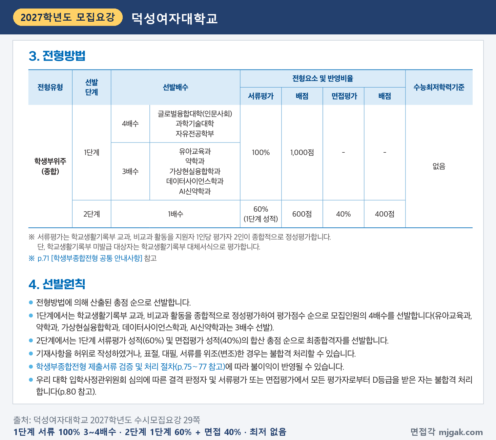
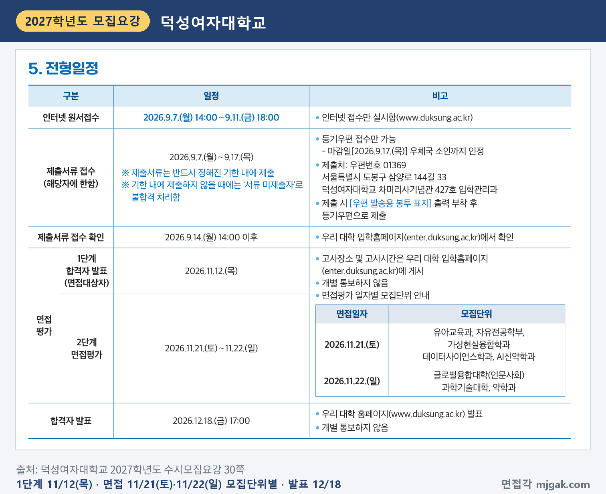
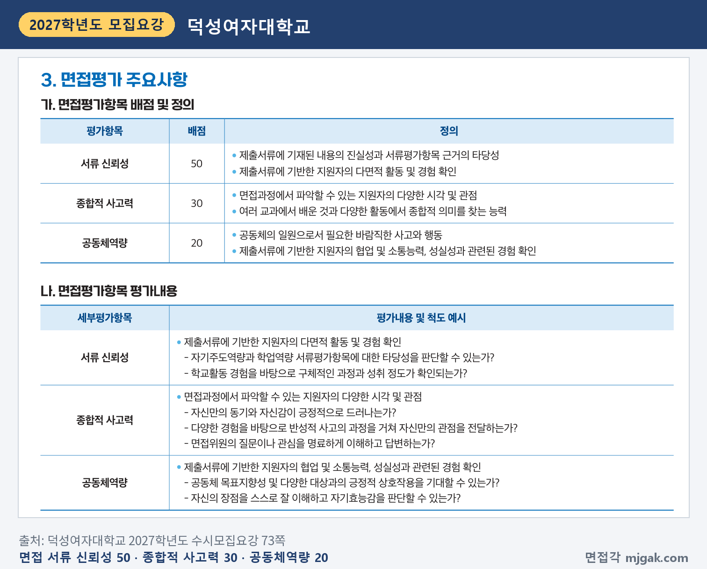
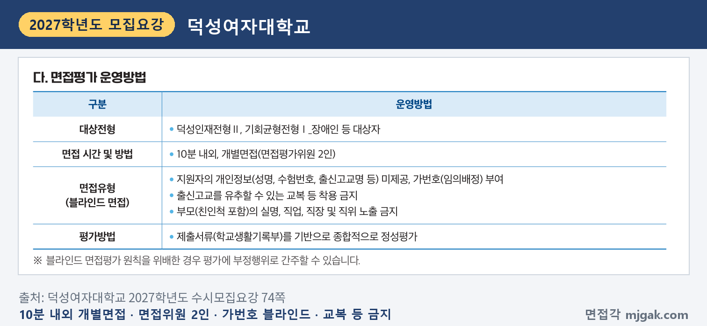
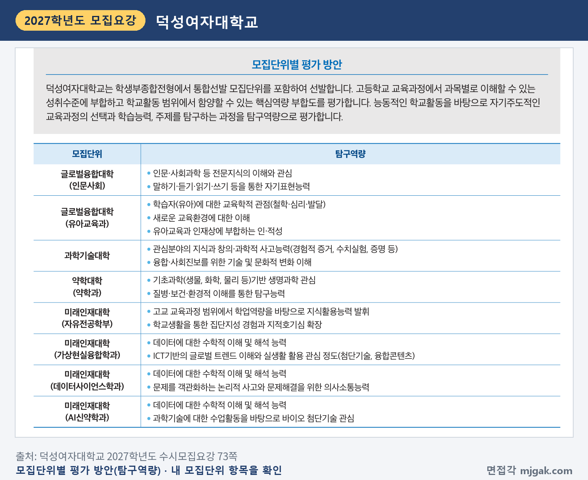
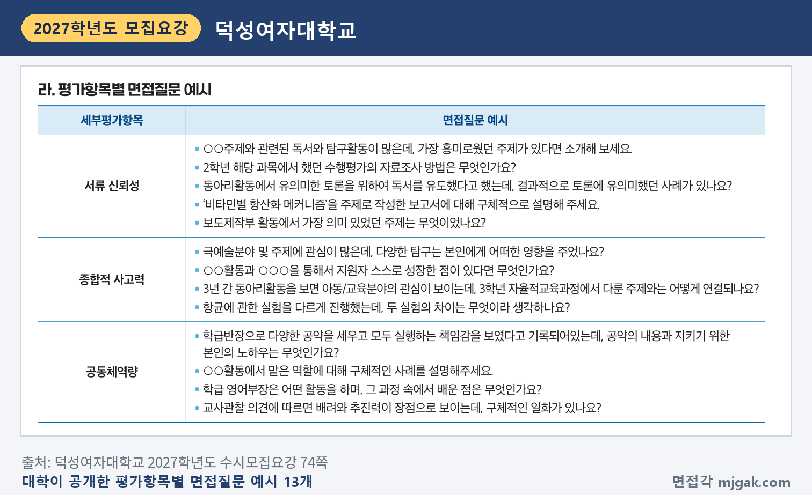
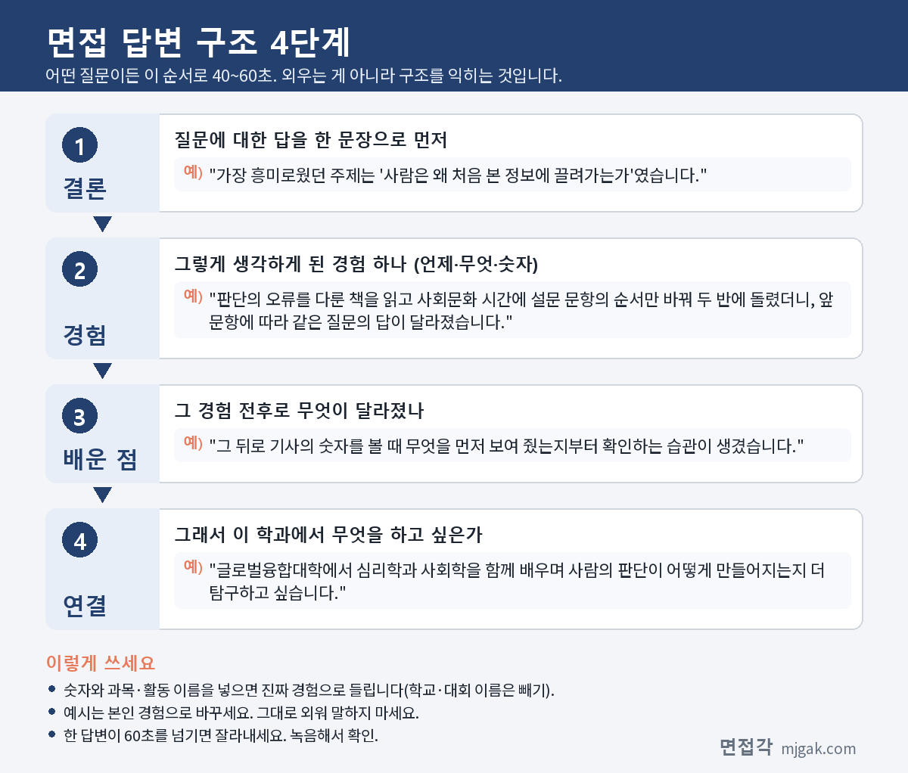

Ctrl+V (서식 유지됨)제목
본문 (이 영역 전체가 복사됩니다)
📷 여기에 이미지 넣기 — 썸네일 — thumb-dsw.png (대표 이미지로 지정)
덕성여대 덕성인재전형Ⅱ에서 먼저 챙길 것은 순서입니다. 1단계 합격자 발표는 수능보다 앞선 11월 12일(목)이고, 수능은 11월 19일(목), 면접은 모집단위에 따라 11월 21일(토) 또는 22일(일)입니다. 2단계는 1단계 성적 60%와 면접평가 40%를 합산하고, 면접은 면접평가위원 2인과 10분 내외로 보는 블라인드 개별면접입니다. 수능최저학력기준은 없습니다. 그리고 덕성여대는 모집요강에 평가항목별 면접질문 예시 13개를 공개했습니다. 덕성여자대학교 2027학년도 수시모집요강을 바탕으로 전형 방법과 일정, 면접 방식, 공개 질문 7개의 답변법, 준비 순서를 정리했습니다. 덕성인재전형Ⅱ에 지원한 고3과 재수생이 읽으시면 됩니다.
1. 덕성인재전형Ⅱ, 2027학년도에는 어떻게 보나
덕성인재전형Ⅱ는 학생부종합전형으로 240명을 뽑습니다. 2026학년도 214명에서 26명 늘었습니다(5쪽). 모집단위는 글로벌융합대학(인문사회) 74명, 미래인재대학(자유전공학부) 64명, 약학과 25명, 과학기술대학 20명, 가상현실융합학과·데이터사이언스학과·AI신약학과 각 15명, 유아교육과 12명입니다(29쪽). 고등학교 졸업(예정)자와 법령에 따라 같은 수준 이상의 학력을 인정받은 여자가 지원할 수 있습니다(29쪽). 자유전공학부로 입학하면 1학년 동안 전공을 탐색한 뒤 2학년 진학 때 인문사회·이공계열 제한 없이 제1전공을 고를 수 있습니다(유아교육과 제외, 3쪽).
📷 여기에 이미지 넣기 — 캡처 1 — 덕성여자대학교 2027학년도 수시모집요강 29쪽: dsw-2027-units.png
1단계는 서류평가 100%로 글로벌융합대학(인문사회)·과학기술대학·자유전공학부는 모집인원의 4배수, 유아교육과·약학과·가상현실융합학과·데이터사이언스학과·AI신약학과는 3배수를 뽑습니다. 2단계는 1단계 성적 60%(600점)와 면접평가 40%(400점)를 합산합니다(29쪽). 이 글에서 계산하면 1단계 통과 규모는 인문사회 296명, 자유전공학부 256명, 약학과 75명, 데이터사이언스학과 45명입니다.
📷 여기에 이미지 넣기 — 캡처 2 — 덕성여자대학교 2027학년도 수시모집요강 29쪽: dsw-2027-method.png
입학사정관위원회 심의에 따른 결격 판정자와 서류평가 또는 면접평가에서 모든 평가자로부터 D등급을 받은 사람은 불합격입니다(29·80쪽). 최종 동점자는 서류평가 총점, 면접 서류 신뢰성, 종합적 사고력, 공동체역량 점수 순으로 가립니다(31쪽). 학교폭력 가해자 조치사항은 서류평가에서 감점(결격) 심의를 하고, 면접평가에서는 공동체역량 영역에 정성평가로 반영합니다(6·77쪽).
2. 언제 보나: 11월 12일(목) 1단계 발표, 수능 이틀·사흘 뒤 면접
일정은 날짜순으로 이렇습니다(30쪽).
- 11월 12일(목): 1단계 합격자(면접대상자) 발표. 고사장소와 고사시간은 입학홈페이지(enter.duksung.ac.kr)에 게시하고 개별 통보하지 않습니다.
- 11월 19일(목): 수능(11쪽)
- 11월 21일(토) 면접: 유아교육과, 자유전공학부, 가상현실융합학과, 데이터사이언스학과, AI신약학과
- 11월 22일(일) 면접: 글로벌융합대학(인문사회), 과학기술대학, 약학과
- 12월 18일(금) 17:00: 최초 합격자 발표(대학 홈페이지)
1단계 발표에서 면접까지 9일이고, 면접은 수능 이틀 또는 사흘 뒤입니다(이 글에서 계산한 값). 수능 전에 답변 초안을 끝내 두세요. 면접평가 미응시자는 불합격 처리됩니다(80쪽).
📷 여기에 이미지 넣기 — 캡처 3 — 덕성여자대학교 2027학년도 수시모집요강 30쪽: dsw-2027-schedule.png
3. 면접은 어떻게 보나
면접은 10분 내외의 개별면접이고 면접평가위원은 2인입니다. 제출서류(학교생활기록부)를 기반으로 종합적으로 정성평가합니다(74쪽). 평가항목과 배점은 다음과 같습니다(73쪽).
- 서류 신뢰성 50: 제출서류에 기재된 내용의 진실성과 서류평가항목 근거의 타당성, 다면적 활동 및 경험 확인
- 종합적 사고력 30: 지원자의 다양한 시각 및 관점, 여러 교과에서 배운 것과 다양한 활동에서 종합적 의미를 찾는 능력
- 공동체역량 20: 공동체의 일원으로서 필요한 바람직한 사고와 행동, 협업 및 소통능력, 성실성과 관련된 경험 확인
종합적 사고력의 평가 내용에 "면접위원의 질문이나 관심을 명료하게 이해하고 답변하는가?"가 들어 있습니다(73쪽). 질문을 끝까지 듣고 묻는 것에 먼저 답하는 연습을 하세요.
📷 여기에 이미지 넣기 — 캡처 4 — 덕성여자대학교 2027학년도 수시모집요강 73쪽: dsw-2027-interview.png
블라인드 면접이라 성명, 수험번호, 출신고교명 등을 제공하지 않고 가번호를 줍니다. 출신고교를 유추할 수 있는 교복 등은 착용할 수 없고, 부모(친인척 포함)의 실명, 직업, 직장, 직위를 드러내면 안 됩니다. 이 원칙을 어기면 부정행위로 간주할 수 있습니다(74쪽). 면접 당일 교복, 명찰 등 신분을 드러낼 수 있는 의상과 물품은 착용할 수 없고, 면접 중에는 휴대전화 등을 소지할 수 없습니다(80쪽).
📷 여기에 이미지 넣기 — 캡처 5 — 덕성여자대학교 2027학년도 수시모집요강 74쪽: dsw-2027-blind.png
서류평가 기준도 함께 보세요. 자기주도역량 30, 학업역량 20, 탐구역량 25, 공동체역량 25이고, 지원자 1명을 평가자 2명이 정성평가합니다(29·72쪽). 면접의 서류 신뢰성은 "자기주도역량과 학업역량 서류평가항목에 대한 타당성"을 확인한다고 적혀 있습니다(73쪽). 모집단위별 평가 방안에는 탐구역량 항목이 따로 있습니다. 예를 들어 약학과는 "기초과학(생물, 화학, 물리 등)기반 생명과학 관심", 데이터사이언스학과는 "데이터에 대한 수학적 이해 및 해석 능력"입니다(73쪽). 내 모집단위 항목을 찾아 두세요.
📷 여기에 이미지 넣기 — 캡처 6 — 덕성여자대학교 2027학년도 수시모집요강 73쪽: dsw-2027-unit-eval.png
4. 대학이 공개한 면접 질문 13개 중 7개 답변법
모집요강 74쪽에는 서류 신뢰성 5개, 종합적 사고력 4개, 공동체역량 4개, 모두 13개의 면접질문 예시가 있습니다. 아래 7개는 그 가운데 고른 것으로, 질문 문장은 그대로 옮겼습니다. 괄호의 평가항목은 모집요강의 분류입니다. 예시는 학생부의 한 줄을 짚어 묻는 형태라, 내 학생부의 활동과 보고서를 넣어 연습하면 됩니다. 답변 예시는 모집단위를 바꿔 쓴 가상의 예시이니 본인 경험으로 바꾸세요.
📷 여기에 이미지 넣기 — 캡처 7 — 덕성여자대학교 2027학년도 수시모집요강 74쪽: dsw-2027-questions.png
▶ 질문 1. ○○주제와 관련된 독서와 탐구활동이 많은데, 가장 흥미로웠던 주제가 있다면 소개해 보세요. (서류 신뢰성)
왜 묻나: 서류 신뢰성의 평가 내용은 "학교활동 경험을 바탕으로 구체적인 과정과 성취 정도가 확인되는가?"입니다(73쪽).
답변 구조: 주제 한 문장 → 읽은 것과 해 본 탐구 → 그 뒤 달라진 점 → 모집단위와 연결.
답변 예시 (글로벌융합대학 인문사회):
"가장 흥미로웠던 주제는 '사람은 왜 처음 본 정보에 끌려가는가'였습니다. 판단의 오류를 다룬 책을 읽고 사회문화 시간에 설문 문항의 순서만 바꿔 두 반에 돌렸더니, 앞 문항에 따라 같은 질문의 답이 달라졌습니다. 그 뒤로 기사의 숫자를 볼 때 무엇을 먼저 보여 줬는지부터 확인하는 습관이 생겼습니다. 글로벌융합대학에서 심리학과 사회학을 함께 배우며 사람의 판단이 어떻게 만들어지는지 더 탐구하고 싶습니다."
주의: 주제를 여러 개 나열하지 말고 하나만 고르세요. 책 내용 요약보다 내가 해 본 탐구에 시간을 쓰세요. 참고로 학생부의 독서활동 항목 자체는 평가에 반영되지 않는다고 모집요강에 적혀 있습니다(74쪽).
▶ 질문 2. 2학년 해당 과목에서 했던 수행평가의 자료조사 방법은 무엇인가요? (서류 신뢰성)
왜 묻나: 서류 신뢰성의 정의에 "제출서류에 기재된 내용의 진실성"이 있습니다(73쪽). 자료를 어디서, 어떻게 모았는지는 직접 한 사람이 답할 수 있는 질문입니다.
답변 구조: 수행평가 주제 → 자료를 모은 방법 → 방법을 바꾼 이유 → 알게 된 것 → 학과 연결.
답변 예시 (데이터사이언스학과):
"2학년 확률과 통계 수행평가에서 친구들의 하루 휴대전화 사용 시간을 조사했고, 자료는 설문과 사용 시간 기록 두 가지로 모았습니다. 처음 설문만 했을 때는 기억에 기대 답해서 실제 기록과 차이가 컸습니다. 그래서 동의한 친구 스무 명에게 일주일 동안 휴대전화에 표시되는 사용 시간을 직접 적어 달라고 부탁해 두 자료를 비교했습니다. 자료를 모으는 방법에 따라 결론이 달라진다는 것을 알았고, 데이터사이언스학과에서 자료 수집 단계부터 제대로 배우고 싶습니다."
주의: "인터넷에서 찾았습니다"로 끝내지 마세요. 어떤 자료를 왜 골랐는지까지 말하세요.
▶ 질문 3. '비타민별 항산화 메커니즘'을 주제로 작성한 보고서에 대해 구체적으로 설명해 주세요. (서류 신뢰성)
왜 묻나: 학생부에 적힌 보고서 제목을 그대로 짚어 묻는 예시입니다. 내 학생부의 보고서 제목을 넣어 연습하세요. 약학과 평가 방안은 "기초과학(생물, 화학, 물리 등)기반 생명과학 관심"입니다(73쪽).
답변 구조: 보고서가 다룬 질문 한 문장 → 궁금해진 계기 → 비교한 기준과 자료 → 한계 → 학과 연결.
답변 예시 (약학과):
"그 보고서는 비타민 C와 비타민 E가 산화를 막는 방식을 비교한 것입니다. 화학 시간에 산화와 환원을 배운 뒤, 같은 항산화 비타민이 왜 두 가지나 있는지 궁금해 교과서와 보도 자료를 찾아 정리했습니다. 비타민 C는 물에, 비타민 E는 기름에 잘 녹아서 몸속에서 작용하는 자리가 다르다는 점을 표로 비교했습니다. 많이 먹을수록 좋은지는 자료만으로 판단할 수 없어 한계로 적었습니다. 약학과에서 성분이 몸 안에서 작용하는 원리를 근거와 함께 배우고 싶습니다."
주의: 보고서에 쓰지 않은 내용을 덧붙이지 마세요. 출처, 비교한 기준, 한계 세 가지를 말할 수 있으면 됩니다.
📷 여기에 이미지 넣기 — 이미지 1 — 제미나이 생성: 햇살 드는 캠퍼스 라운지 창가에서 무궁화 화분·그림책과 나무 블록·비타민 캡슐과 오렌지·뇌 모형·VR 헤드셋·페트리 접시 옆에서 답하는 여학생(실사) / "제미나이 프롬프트 1"
(AI로 만든 이미지로, 실제 캠퍼스와 다를 수 있습니다)
▶ 질문 4. ○○활동과 ○○○을 통해서 지원자 스스로 성장한 점이 있다면 무엇인가요? (종합적 사고력)
왜 묻나: 종합적 사고력의 정의가 "여러 교과에서 배운 것과 다양한 활동에서 종합적 의미를 찾는 능력"입니다(73쪽). 두 경험을 하나의 의미로 묶어 말해야 합니다.
답변 구조: 성장한 점 한 문장 → 활동 장면 → 교과에서 가져온 방법 → 결과 → 앞으로의 공부.
답변 예시 (자유전공학부):
"학급 환경부 활동과 통합과학 수업을 통해, 문제를 숫자로 확인한 뒤에 움직이는 습관이 생겼습니다. 분리배출 캠페인을 할 때 처음에는 포스터만 붙여 달라진 것이 없었습니다. 그래서 일주일 동안 교실 쓰레기통의 플라스틱을 세어 보고, 가장 많이 섞이는 것이 빨대라는 것을 찾아 빨대 수거함을 따로 두었더니 섞여 들어가는 양이 눈에 띄게 줄었습니다. 자유전공학부에서 1학년 동안 여러 분야를 들어 보며 이렇게 분야를 잇는 공부를 할 전공을 고르고 싶습니다."
주의: 활동 두 개를 따로 설명하면 시간이 모자랍니다. 두 경험에 공통으로 남은 것을 첫 문장에 두세요.
▶ 질문 5. 3년 간 동아리활동을 보면 아동/교육분야의 관심이 보이는데, 3학년 자율적교육과정에서 다룬 주제와는 어떻게 연결되나요? (종합적 사고력)
왜 묻나: 3년의 기록을 한 줄로 이어 보라는 질문입니다. 평가 내용의 "다양한 경험을 바탕으로 반성적 사고의 과정을 거쳐 자신만의 관점을 전달하는가?"와 맞닿습니다(73쪽). 유아교육과 평가 방안에는 "학습자(유아)에 대한 교육학적 관점(철학·심리·발달)"이 있습니다(73쪽).
답변 구조: 연결점 한 문장 → 동아리에서 본 장면 → 3학년 주제 → 바뀐 관점 → 학과 연결.
답변 예시 (유아교육과):
"동아리와 3학년 주제를 잇는 것은 '아이가 어떻게 받아들이는가'라는 질문입니다. 교육봉사 동아리에서 3년 동안 그림책을 읽어 주며, 아이들이 글보다 그림 속 작은 부분에 먼저 반응하는 것을 봤습니다. 3학년 수업에서 '놀이와 배움'을 주제로 발표하며 발달 단계마다 받아들이는 방식이 다르다는 내용을 찾았고, 그 뒤 동아리에서 고르는 책도 그림이 이야기를 이끄는 책으로 바꿨습니다. 유아교육과에서 유아 발달을 제대로 배우고 싶습니다."
주의: 질문 속 '3학년 자율적교육과정'은 그 학생의 기록입니다. 내 학생부의 3학년 기록으로 바꿔 연습하세요.
▶ 질문 6. 항균에 관한 실험을 다르게 진행했는데, 두 실험의 차이는 무엇이라 생각하나요? (종합적 사고력)
왜 묻나: 같은 주제의 두 실험을 비교하게 해 "지원자의 다양한 시각 및 관점"을 확인하는 질문입니다(73쪽). 과학기술대학 평가 방안에는 "창의·과학적 사고능력(경험적 증거, 수치실험, 증명 등)"이 있습니다(73쪽).
답변 구조: 차이 한 문장 → 첫 실험과 한계 → 두 번째 실험에서 바꾼 것 → 배운 점 → 학과 연결.
답변 예시 (과학기술대학):
"첫 번째 실험이 '효과가 있는가'를 봤다면, 두 번째는 '무엇 때문에 달라지는가'를 봤다는 점이 다릅니다. 1학기에는 손을 씻기 전과 후에 배지에 손도장을 찍어 비교했는데, 씻으면 줄어든다는 것만 알 수 있었습니다. 2학기에는 물로만 씻기와 비누로 씻기를 나누고, 씻는 시간과 배양 온도를 같게 맞춰 다시 비교했습니다. 바꾸는 조건을 하나로 줄여야 원인을 말할 수 있다는 것을 배웠고, 과학기술대학에서 실험 설계를 제대로 익히고 싶습니다."
주의: 결과 수치를 새로 만들어 말하지 마세요. 바꾼 조건과 그 이유가 핵심입니다.
▶ 질문 7. ○○활동에서 맡은 역할에 대해 구체적인 사례를 설명해주세요. (공동체역량)
왜 묻나: 공동체역량의 정의는 "제출서류에 기반한 지원자의 협업 및 소통능력, 성실성과 관련된 경험 확인"입니다(73쪽).
답변 구조: 맡은 역할 한 문장 → 막혔던 점 → 내가 한 일 → 결과 → 학과 연결.
답변 예시 (가상현실융합학과):
"정보 동아리에서 학교 안내용 가상 투어를 만들 때 저는 사진 촬영과 사용자 테스트를 맡았습니다. 첫 완성본을 1학년 후배 다섯 명에게 써 보게 했더니 세 명이 중간에 길을 잃었습니다. 저는 후배들이 멈칫한 지점을 표로 정리해 팀에 보여 주고, 장면마다 방향 화살표를 넣자고 제안했습니다. 다시 테스트했을 때는 다섯 명 모두 목적지를 찾았습니다. 가상현실융합학과에서 쓰는 사람의 입장에서 콘텐츠를 설계하는 법을 배우고 싶습니다."
주의: "저희 동아리는"으로 시작하면 내 역할이 흐려집니다. "저는 ○○을 맡았습니다"로 시작하세요.
나머지 6개(토론을 위한 독서 유도, 보도제작부 주제, 극예술 탐구의 영향, 학급반장 공약, 영어부장 활동, 배려와 추진력 일화)도 학생부에 적힌 한 줄을 짚어 묻습니다. 내 학생부에서 "○○했다"고 적힌 문장을 골라 같은 방식으로 답해 보세요.
5. 답변은 이 4단계로 만드세요
어떤 질문이든 결론 → 경험 → 배운 점 → 연결 순서로 40~60초 안에 말하세요. 아래 도식은 질문 1을 4단계로 쪼갠 것입니다.
📷 여기에 이미지 넣기 — 도식 — structure-dsw.png
6. 10월 26일(월)부터 면접 당일까지 준비 순서
10월 26일(월) ~ 11월 11일(수): 수능 공부가 먼저이니 주말에 조금씩 합니다. 1단계 발표 다음 주가 수능이라 1단계 결과 전에 초안을 만들어 둡니다. 학생부에서 보고서, 수행평가, 실험, 맡은 역할에 표시하고, 공개 질문 13개의 ○○에 내 활동을 넣어 답변을 적습니다. 모집단위별 평가 방안(73쪽)의 내 항목도 확인합니다.
11월 12일(목), 1단계 발표: 입학홈페이지에서 합격 여부, 고사장소, 고사시간을 직접 확인합니다(30쪽). 건강상 이유로 면접 당일 편의가 필요하면 미리 입학관리과에 문의합니다(80쪽).
11월 13일(금) ~ 18일(수): 답변은 하루에 한두 개만 소리 내어 봅니다.
11월 19일(목): 수능.
11월 20일(금): 10분을 재며 모의 면접을 한 번 녹음하고, 이름·학교 이름·부모 직업이 나오는 답과 60초를 넘는 답을 고칩니다. 수험표와 신분증을 챙깁니다(13쪽).
11월 21일(토) 또는 22일(일), 면접: 교복, 명찰 등 신분이 드러나는 의상과 물품은 착용하지 않습니다(74·80쪽). 신분증을 가지고 있지 않아 본인 확인 절차를 하지 못하면 불합격 처리됩니다(80쪽).
12월 18일(금) 17:00: 최초 합격자 발표. 합격했다면 12월 21일(월) 9:00 ~ 23일(수) 15:00 온라인 문서등록을 놓치지 마세요(12쪽).
7. 덕성여대 덕성인재전형Ⅱ 면접 자주 묻는 것들
Q. 면접 날짜를 고를 수 있나요?
A. 면접일은 모집단위별로 정해져 있습니다(30쪽). 날짜 변경 안내는 모집요강에 없고, 고사장소와 시간은 입학홈페이지에 게시하며 개별 통보하지 않습니다(30쪽). 면접에 응시하지 않으면 불합격입니다(80쪽).
Q. 제시문을 읽고 푸는 문제가 나오나요?
A. 제시문이나 문제 풀이 안내는 모집요강에 없습니다. 면접은 학교생활기록부를 기반으로 정성평가하고(74쪽), 공개된 예시도 학생부의 활동과 보고서를 묻습니다(74쪽).
Q. 면접 복장은 어떻게 하나요?
A. 출신고교를 유추할 수 있는 교복 등은 착용할 수 없고(74쪽), 면접 당일 교복, 명찰 등 신분을 드러낼 수 있는 의상과 물품도 금지입니다(80쪽). 그 밖의 복장 규정은 모집요강에 없습니다.
Q. 수능 최저가 있나요?
A. 없습니다(29쪽).
Q. 1단계에서 떨어지면 전형료는 어떻게 되나요?
A. 덕성인재전형Ⅱ 전형료는 75,000원(1단계 55,000원, 2단계 20,000원)입니다(82쪽). 1단계 불합격자는 발표 후 2단계 전형료 20,000원을 원서접수 때 입력한 계좌로 돌려받습니다(83쪽).
8. 면접 전날 체크리스트
□ 공개 질문 13개의 ○○에 내 활동을 넣어 답해 보았다
□ 학생부에 적힌 보고서·실험·수행평가마다 자료 출처와 방법을 말할 수 있다
□ 두 활동을 하나의 의미로 묶는 답(질문 4)을 60초 안에 말할 수 있다
□ 내 모집단위의 평가 방안 항목을 읽어 두었다
□ 녹음으로 이름·학교 이름·부모 직업이 나오지 않는지 확인했다
□ 입학홈페이지에서 고사장소와 시간을 확인했고 수험표와 신분증을 챙겼다
□ 교복·명찰은 착용하지 않는다
9. 같은 시기에 면접 보는 대학
덕성여대와 같은 11월 21일·22일에 면접을 보는 대학입니다.
▷ 이화여대 미래인재전형 면접형 면접 총정리 (11월 21일·22일)
▷ 성신여대 자기주도인재 면접 총정리 (11월 21일·22일·28일·29일, 모집단위별)
▷ 국민대 국민프런티어 면접 총정리 (11월 21일·22일)
10. 함께 보면 좋은 글
▷ AI·데이터사이언스학과 면접 질문 6가지와 답변 예시 총정리
덕성인재전형Ⅱ 면접은 10분 내외의 시간 동안 학생부에 적힌 한 줄을 내가 직접 한 과정으로 풀어 설명하고, 그 경험들을 하나의 의미로 묶어 보여 주는 자리입니다.
※ 이 글의 내용은 덕성여자대학교 2027학년도 수시모집요강에서 인용했습니다. 괄호 안 쪽수는 모집요강에 인쇄된 쪽수입니다. 면접 질문 7개는 대학이 모집요강 74쪽에 공개한 평가항목별 면접질문 예시 13개 가운데 골라 그대로 옮긴 것이고, 답변 예시는 이 글에서 만든 가상의 예시입니다. 고사장소와 시간은 11월 12일(목) 1단계 발표 때 덕성여대 입학홈페이지 공지를 꼭 확인하세요.
덕성여대를 포함한 76개 대학의 2027학년도 면접 정보와 71개 학과별 면접 질문·답변 예시, 대학이 공개한 실제 면접 기출을 무료로 정리한 사이트입니다. 회원가입 없이 바로 볼 수 있고, 질문을 무작위로 뽑아 60초 타이머로 연습하는 모의 면접도 있습니다.
태그 (#은 에디터가 자동으로 붙이므로 그대로 붙여 넣어도 됩니다)
넣을 이미지 목록 (docs/promo/img 폴더)









제미나이 프롬프트 1 — 햇살 드는 캠퍼스 라운지 창가에서 무궁화 화분·그림책과 나무 블록·비타민 캡슐과 오렌지·뇌 모형·VR 헤드셋·페트리 접시 옆에서 답하는 여학생(실사) (4:3) — 제미나이에 그대로 붙여 넣어 이미지를 만드세요